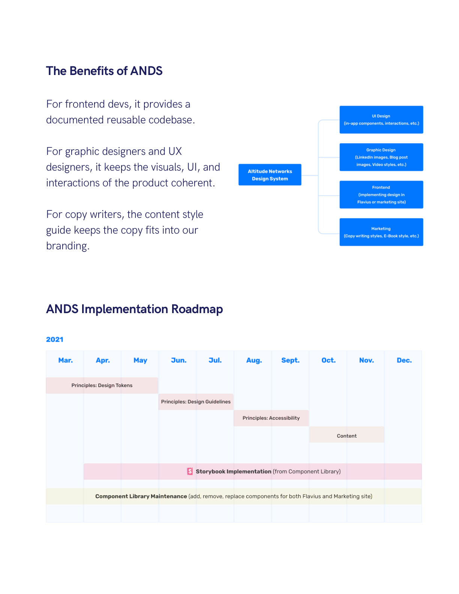
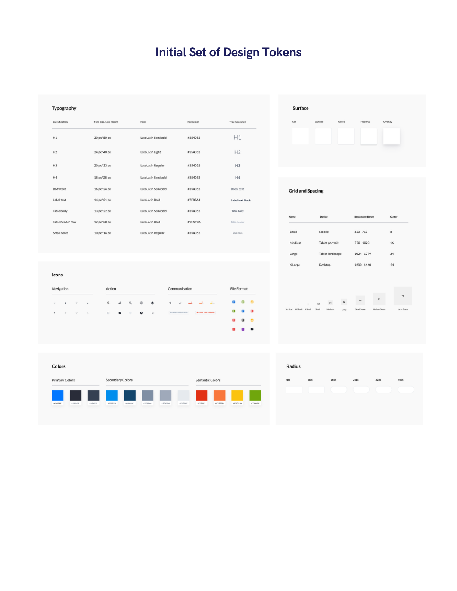
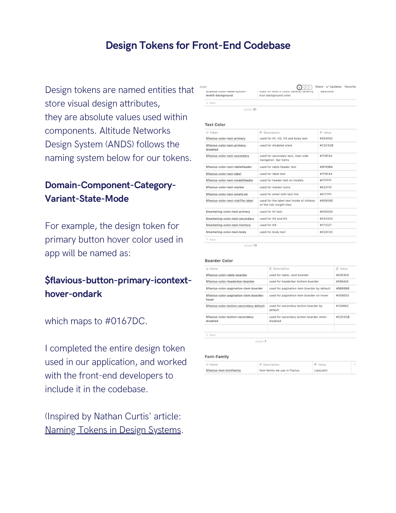
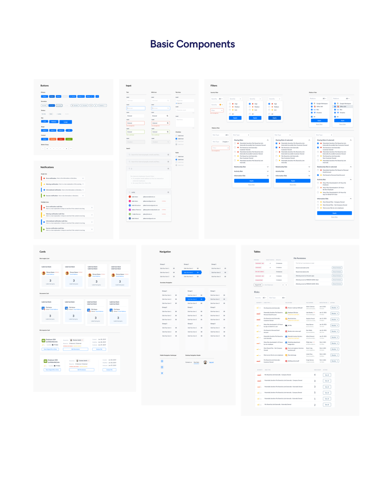
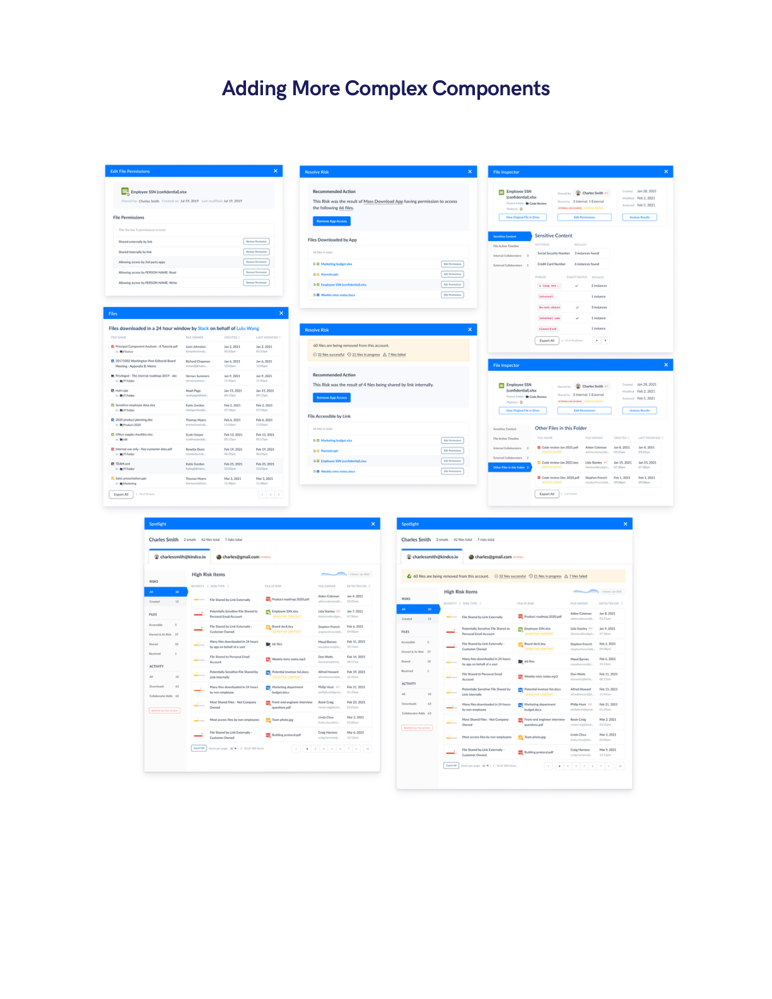

Case study · Altitude Networks · Design System, UI Patterns, Interaction Design, Branding
Altitude Networks Design System (ANDS)
Proposing and building the company's first design system — design tokens, a component library, and content guidelines that keep design, code, and copy coherent across every handoff.
At a glance
- Approach
- A designer-initiated system: propose the structure and roadmap, win stakeholder buy-in, then build incrementally — tokens first, then basic components, then complex components — on a sustainable half-day-a-week cadence.
- Scope
- Design tokens (typography, color, icons, surface, grid and spacing, radius), a component library from buttons and inputs through filters, cards, navigation, and tables, plus design and content style guidelines.
- Team
- 1 UX designer (me), 1 frontend developer, 1 customer success partner.
- Tools
- Figma for the library and documentation of visual decisions; Notion for guidelines and the roadmap.
- Status
- Proposed, adopted, and in active use — the full token set is complete and integrated into the front-end codebase, with the component library still growing.
At a startup, the same UI components and marketing copy get rebuilt and rewritten over and over. Seeing that repetition, I proposed creating a design system for the company — and committed half a day each week to building it. The effort was well received by all stakeholders and became ANDS: the Altitude Networks Design System.
01Context & Why a Design System
Altitude Networks' product and marketing surfaces kept reusing the same UI patterns and copy — but without a shared source of truth, every reuse was a re-creation. Inconsistencies crept in across design, code, and content, and each handoff lost a little fidelity.
A design system is the central place for documenting design decisions. It improves and sustains a team's shared understanding of visual style through design, code, and other interdisciplinary handoffs. That was the pitch: not a side project for polish, but infrastructure for coherence.
The value proposition was different for each discipline:
- For frontend developers — a documented, reusable codebase.
- For graphic and UX designers — coherent visuals, UI, and interactions across the product.
- For copywriters — a content style guide that keeps the copy true to the brand.
02Proposal & Roadmap
I proposed the structure of ANDS and its implementation roadmap, then secured buy-in from design, engineering, and customer success. The plan deliberately fit a startup's reality: four weeks of initial planning, then an ongoing build cadence I could sustain — half a day per week — without displacing product work.

The sequencing mattered: tokens first (the smallest, highest-leverage decisions), then the basic components built from them, then the complex, product-specific components — so every layer stood on a documented foundation.
03Design Tokens
The foundation of ANDS is its token set: typography, color (primary, secondary, and semantic), icons, surface treatments, grid and spacing, and radius.

Tokens are named entities that store visual design attributes — absolute values used within components. ANDS follows a structured naming convention (inspired by Nathan Curtis' "Naming Tokens in Design Systems"):
Domain – Component – Category – Variant – State – Mode
For example, the token for a primary button's hover color used in the app is named $flavious-button-primary-icontext-hover-ondark, which maps to #0167DC. The convention makes every token self-describing — where it lives, what it styles, and when it applies.

I completed the entire design-token set used in our application and worked with the front-end developers to include it in the codebase — making the tokens real, not just documentation.
04Component Library
With tokens in place, I built the component library in Figma, starting with the basics: buttons (primary, secondary, tertiary, sizes, shapes, and groups), inputs and text areas, search, notifications across severities, filters, cards, navigation, and tables.

From there, the system grew into the more complex, product-specific components — composed from the same primitives so new surfaces inherit consistency by default.

05Outcome & Reflection
ANDS was well received by all stakeholders and is still in active use and growth. The full token set is complete and shipped into the front-end codebase, the component library covers the product's core surfaces, and the content style guide keeps marketing copy on-brand.
The lesson I carry from this project is that a design system at a startup succeeds on sustainability, not scale. A half-day-a-week cadence, sequenced from tokens upward, delivered a system the whole team actually uses — because it was scoped to be maintained, not just launched.
ANDS was a self-initiated system built alongside product work at Altitude Networks, with a team of one designer, one frontend developer, and one customer success partner.